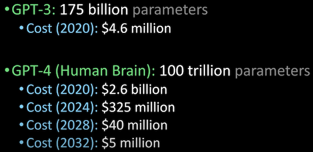

Metadata, Medical Data and TF.Data
Announcements in the metadata management from Shopify and Stripe. What it takes to build a startup in the field of medical AI, and how much time you’ll spend gathering data for it. TensorFlow’s latest release was mostly about its data API.
ü©∫ AI in Medicine
Highly recommend the Data Futurology podcast about what it takes to build an AI company in the medical sphere. Many interesting things, but what it takes to build real-world datasets in the wild is always worth hearing:
- “There is a lot of differences in medical data — if you did MRIs in two different centers, you cannot just take data from both of them and use it.”
- “Another under-appreciated aspect of building a lot of real-world AI applications, where, unlike kaggle, nobody’s got a 100 thousand in a nicely organized folder… Sometimes only having data for 10 patients at a time, scans coming on CDs, 1 at a time.”
“As much as our system involves AI and image processing there is probably just as much if not more work in around data standardization, data cleanliness and manual intervention into data.”
- 2.5 years (from 5!) were spent on building a political relationship (with doctors), gathering data piece by piece, later building integrations with existing systems.
- “The best results were coming from building a relationship with individual doctors.”
To sum it up, I think that data gathering relationship building is the new sales. Building a company that relies on data, you are as good as the number of data providers you’ve built a relationship with.
üìº Metadata
Two of the big players have released something about their metadata solutions. Many of the big players already have established solutions for a couple of years, with Shopify being the latest company to build their own.
Shopify’s Artifact
- Their implementation uses Elasticseach and a graph database to provide search and data lineage respectively. GraphQL’s Apollo as an API layer. Quite a standard stack. Similar to e.g. this one.
- Other than that, from the screenshots it looks like it does what it should and looks very much like similar systems. However, a quote from the article explaining why it’s generally hard to reuse existing solutions:
Every organization’s data stack is different. While some upstream processes can be standardized and cataloged appropriately, the business context of downstream processes creates a wide distribution of requirements that are near impossible to satisfy with a one-size-fits-all solution.
Stripe and Privacy
Stripe is using their Amundsen metadata tool to increase focus on consumer privacy and better comply with GDPR and CCPA.
Other companies
A collection of data discovery articles.
üñá Tensorflow 2.3
Ironically the latest TensorFlow release is also about data. Two of the main additions to the help make preprocessing smoother. I think preprocessing may very well be the most overlooked step and improving it is hugely beneficial.
- td.data.snapshot: allows you to run the preprocessing pipeline once, save the output and play with parameter optimization on top of that. Read more details in the RFC.
- Preprocessing layer API: package preprocessing logic inside a model for easier deployment.
To finish on a positive note, here is an awesome 3 minutes Lex Fridman’s video estimating costs for GPT to equal a human brain:
